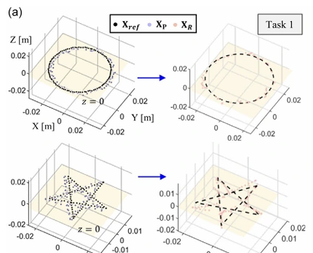
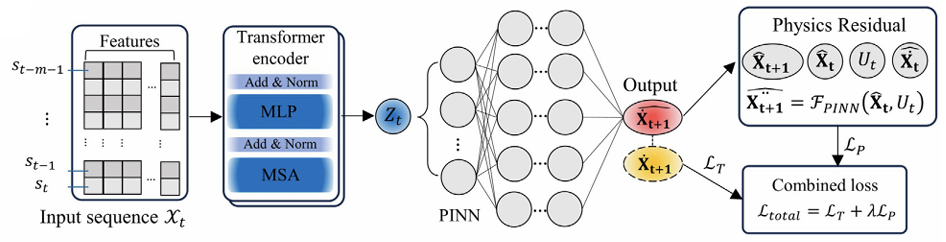
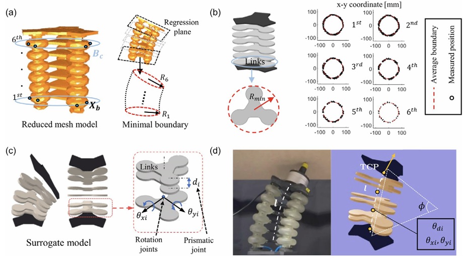
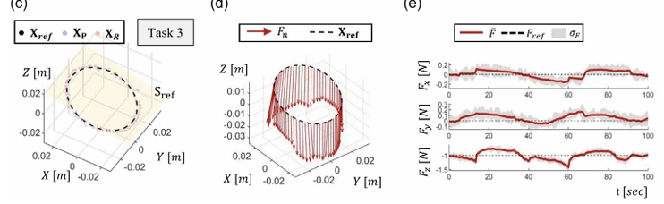
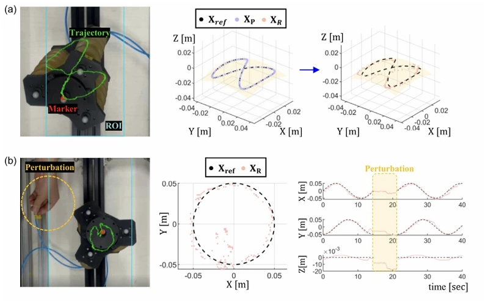

Trajectory Tracking
The transferred policy reproduced circular and star-shaped Cartesian paths on the physical manipulator, with average real-robot errors of 3.38 mm and 6.79 mm, respectively.
A sim-to-real framework that connects high-fidelity finite-element simulation to a fast physics-based surrogate through learned dynamics and cross-domain mappings.
Accurate soft-robot simulation is generally too computationally expensive for reinforcement learning, while conventional rigid-body simulators cannot directly represent nonlinear soft deformation. This work connects a real pneumatic manipulator, a calibrated SOFA finite-element model, and a contact-aware PyBullet surrogate. Data generated by the FEM model are used to train a Transformer-based physics-informed dynamics model and mappings between pneumatic pressure and surrogate joint configurations.
The accelerated surrogate then supports reinforcement-learning policy training, followed by sim-to-real transfer through calibrated actuation mappings. Experiments evaluate trajectory tracking, force-induced deformation, hybrid position-force control, unseen three-dimensional trajectories, and recovery from pneumatic disturbances.
Real measurements and motion-capture data calibrate a high-fidelity SOFA finite-element model of the three-bellows pneumatic manipulator.
FEM-generated data train a Transformer-based physics-informed dynamics model. FEM-derived geometry and range-of-motion constraints inform the construction of a six-link PyBullet surrogate.
Reinforcement-learning policies are trained at high rate in the surrogate and translated into real pneumatic commands through learned cross-domain mappings.


The physics-informed dynamics model and FEM-derived six-link surrogate preserve the control-relevant behavior needed for accelerated policy learning.
Policies trained in the accelerated surrogate were transferred to the physical manipulator and evaluated on trajectory, deformation, hybrid-control, generalization, and disturbance-recovery tasks.
3.38 mm
Circular trajectory sim-to-real error
4.20 mm / 0.70 N
Hybrid-control position / force error
5.34 ± 0.38 mm
Unseen 3D trajectory tracking error

The transferred policy reproduced circular and star-shaped Cartesian paths on the physical manipulator, with average real-robot errors of 3.38 mm and 6.79 mm, respectively.

The manipulator followed a tilted elliptical path while regulating surface contact force, producing real-world errors of 4.20 mm in position and 0.70 N in force.

The learned controller generalized to an unseen nonplanar figure-eight trajectory and returned to the reference path after the pneumatic line was reconnected following a temporary disconnection.
See the paper for the complete method, assumptions, and quantitative evaluation.
Taehwa Hong, Jungjae Lee, Byung-Hyun Song, and Yong-Lae Park. “Bridging High-Fidelity Simulations and Physics-Based Learning using a Surrogate Model for Soft Robot Control.” Advanced Intelligent Systems 8 (2026): e202500696. Published online October 30, 2025. doi:10.1002/aisy.202500696.
@article{hong2026bridging,
author = {Hong, Taehwa and Lee, Jungjae and Song, Byung-Hyun and Park, Yong-Lae},
title = {Bridging High-Fidelity Simulations and Physics-Based Learning using a Surrogate Model for Soft Robot Control},
journal = {Advanced Intelligent Systems},
volume = {8},
number = {2},
pages = {e202500696},
year = {2026},
doi = {10.1002/aisy.202500696},
publisher = {Wiley-VCH},
note = {Published online 30 October 2025}
}